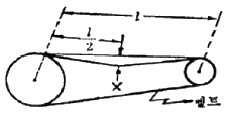
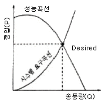
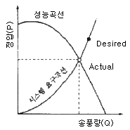
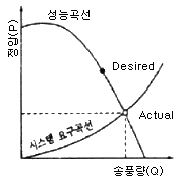
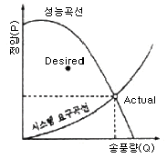

산업위생관리산업기사 (2012-08-26 기출문제)
1과목: 산업위생학 개론
1. 산업피로는 작업부하, 노동시간, 휴식과 휴양, 개인적 적응조건 등으로 구분할 수 있는데 다음 중 개인적 적응조건과 관계가 가장 적은 것은?
- 영양상태
- 작업밀도
- 숙련도
- 적응능력
(정답률: 76%)

2. 다음 중 바람직한 교대제에 대한 설명으로 틀린 것은?
- 2교대시 최저 3조로 편성한다.
- 각 반의 근무시간은 8시간으로 한다.
- 야간근무의 연속일수는 4 ~ 7일 이내로 한다.
- 야근 후 다음 반으로 가는 간격은 48시간 이상으로 한다.
(정답률: 88%)
3. 다음 중 산업위생(보건) 관련 기관과 그 약어의 연결이 잘못된 것은?
- 국제암연구소 : IARC
- 미국정부산업위생전문가협회 : ACGIH
- 미국산업안전보건청 : NIOSH
- 미국산업위생학회 : AIHA
(정답률: 48%)
4. 다음 중 역사상 최초로 기록된 직업병은?
- 납중독
- 음낭암
- 수은중독
- 진폐증
(정답률: 71%)
5. 근육운동에 필요한 에너지 중 혐기성 대사에 사용되는 물질이 아닌 것은?
- 단백질
- 글리코겐
- 크레아틴인산(CP)
- 아데노신삼인산(ATP)
(정답률: 67%)
6. 다음 중 작업장에서의 소음수준 측정방법으로 틀린것은?
- 소음계의 청강보정회로는 A특성으로 한다.
- 소음계 지시침의 동작은 빠른(fast) 상태로 한다.
- 소음계의 지시치가 변동하지 않는 경우에는 해당 지시치를 그 측정점에서의 소음수준으로 한다.
- 소음이 1초 이상의 간격을 유지하면서 최대음압수준이 120dB(A)이상의 소음인 경우에는 소음수준에 따른 1분 동안의 발생횟수를 측정한다.
(정답률: 88%)
7. 개정된 NOISH의 들기작업 권고기준에 따라 권장무게 한계가 8.5kg이고, 실제작업무게가 10kg일 때 들기지수(LI)는 약 얼마인가?
- 0.15
- 0.18
- 0.85
- 1.18
(정답률: 62%)
8. 다음 중 재해율 통계방법에 있어 강도율을 나타낸것은?
- (연간총재해자수/연평균근로자수) × 1000
- (연간총재해자수/연평균근로자수) × 1000000
- (연간총재해발생건수/연간총근로시간수) × 1000000
- (연간총근로손실일수/연간총근로시간수) × 1000
(정답률: 56%)
9. 다음 중 산소결핍장소에서의 관리 방법에 관한 내용으로 틀린 것은?(오류 신고가 접수된 문제입니다. 반드시 정답과 해설을 확인하시기 바랍니다.)
- 생체 중에서 산소결핍에 대하여 가장 민감한 조직은 뇌이다.
- 산소결핍이란 공기 중의 산소농도가 8% 미만인 상태를 말한다.
- 산소결핍의 우려가 있는 경우에는 산소의 농도를 측정하는 사람을 지명하여 측정하도록 하여야 한다.
- 맨홀 지하작업 등 산소결핍이 우려되는 장소에서는 근로자에게는 구명밧줄과 방독마스크를 착용하여야 한다.
(정답률: 59%)
10. 다음 중 근골격계질환을 예방하기 위한 조치로 적절하지 않은 것은?
- 망치의 미끄러짐을 방지하기 위하여 망치자루에 고무밴딩을 하였다.
- 날카로운 책상 모서리에 팔의 하박부분이 자주 닿아 모서리에 헝겊을 대었다.
- 작업으로 인해 생긴 체열을 쉽게 발산하기 위하여 작업장의 온도를 약 16℃ 이하로 유지시켰다.
- 계속하여 왼쪽으로 굽혀 잡는 자세를 오른쪽으로 잡도록 유도하였다.
(정답률: 79%)
11. TLV가 20ppm인 styrene를 사용하는 작업장의 근로자가 1일 11시간 작업했을 때, OSHA 보정방법으로 보정한 허용기준은 약 얼마인가?
- 11.8ppm
- 13.8ppm
- 14.6ppm
- 16.6ppm
(정답률: 39%)
12. 다음 중 작업에 따른 발생 유해인자와 직업병의 연결이 잘못된 것은?
- 탈지작업 - 벤젠 - 간장해
- 초자공 - 적외선 - 백내장
- 인쇄소주자공 - 연 - 빈혈
- 방사선기사 - 방사선 - 암유발
(정답률: 53%)
13. 운반 작업을 하는 근로자의 약한 손(오른손잡이의 경우 왼손)의 힘은 40kg이다. 이 근로자가 무게 10kg인 상자를 두 손으로 들어 올릴 경우 작업강도(%MS)는 얼마인가?
- 12.5%
- 15.0%
- 17.5%
- 25.0%
(정답률: 68%)
14. 다음 중 산업안전보건법령상 기관석면조사 대상으로서 건축물이나 설비의 소유주 등이 고용노동부장관에게 등록한 자로 하여금 그 석면을 해체·제거하도록 하여야 하는 함유량과 면적기준으로 틀린 것은?
- 석면이 1wt%를 초과하여 함유된 분무재 또는 내화피복재를 사용한 경우
- 파이프에 사용된 보온재에서 석면이 1wt%를 초과하여 함유되어 있고, 그 보온재 길이의 합이 25m 이상인 경우
- 석면이 1wt%를 초과하여 함유된 관련 규정에 해당하는 자재의 면적의 합이 15m2이상 또는 그 부피의 합이 1m3이상인 경우
- 철거 · 해체하려는 벽체재료, 바닥재, 천장재 및 지붕재 등의 자재에 석면이 1wt%를 초과하여 함유되어 있고 그 자재의 면적의 합이 50m2이상인 경우
(정답률: 66%)
15. 다음 중 사무실 공기관리 지침에 있어 오염물질의 대상에 해당하지 않는 것은?
- 미세먼지(PM10)
- 포름알데히드(HCHO)
- 낙하세균(PM50)
- 오존(O3)
(정답률: 49%)
16. 다음 중 감각온도의 3요소로 볼 수 없는 것은?
- 기온
- 기압
- 기류
- 기습
(정답률: 73%)
17. 다음 중 직업과 적성에 있어 생리적 적성검사에 해당하지 않는 것은?
- 감각기능검사
- 심폐기능검사
- 체력검사
- 지각동작검사
(정답률: 82%)
18. 다음 중 허용농도(TLV) 적용상 주의할 내용으로 틀린 것은?
- 산업장의 유해조건을 평가하고 개선하기 위한 지침으로만 사용되어야 한다.
- 산업위생전문가에 의하여 적용되어야 한다.
- 24시간 노출 또는 정상 작업시간을 초과한 노출에 대한 독성 평가에는 적용될 수 없다.
- 대기오염 평가 및 관리에 적용될 수 없으며 단순히 독성의 강도를 비교, 평가할 수 있는 기준이다.
(정답률: 75%)
19. 산업안전보건법령상 건강진단기관이 건강진단을 실시하였을 때에 그 결과를 고용노동부장관이 정하는 건강진단 개인표에 기록하고, 건강진단 실시일부터 며칠이내에 근로자에게 송부하여야 하는가?
- 15일
- 30일
- 60일
- 90일
(정답률: 79%)
20. 국소피로를 평가는 데는 근전도(electromyogram, EMG)를 가장 많이 이용하고 있다. 피로한 근육에서 측정된 EMG는 정상 근육에서 측정된 EMG와 비교할 때 차이가 있는데 다음 중 차이데 대한 설명으로 옳은 것은?
- 총전압의 증가
- 평균 주파수의 증가
- 0 ~ 200Hz 저주파수에서의 힘의 증가
- 500 ~ 1000Hz 고주파수에서의 힘의 감소
(정답률: 74%)
2과목: 작업환경측정 및 평가
21. 20℃ 1기압에서 100 L의 공기 중에 벤젠 1mg을 혼합시켰다. 이때의 벤젠농도(C6H6, V/V)는?
- 약 2.1 ppm
- 약 2.7 ppm
- 약 3.1 ppm
- 약 3.7 ppm
(정답률: 45%)
22. 입자상 물질의 채취에 사용되는 막여과지 중 화학물질과 열에 저항이 강한 특성을 가지고 있고 코크스 제조공정에서 발생하는 코크스 오븐 배출물질 채취에 사용되는 것은?
- 은막 여과지(silver membrane filter)
- 섬유상 여과지(fiber filter)
- PTFE 여과지(polytetrafluroethylene filter)
- MCE 여과지(mixed cellulose ester membrane filter)
(정답률: 72%)
23. 실리카겔 흡착관에 대한 설명으로 옳지 않는 것은?
- 실리카겔은 극성이 강하여 극성물질을 채취한 경우 물과 같은 일반 용매로는 탈착되기 어렵다.
- 추출용액이 화학분석이나 기기분석에 방해물질로 작용하는 경우가 많지 않다.
- 유독한 이황화탄소를 탈착용매로 사용하지 않는다.
- 활성탄으로 채취가 어려운 아닐린, 오르쏘-톨루이딘 등의 아민류 채취가 가능하다.
(정답률: 59%)
24. 고열 측정구분이 습구온도이고, 측정기기가 자연습구 온도계인 경우 측정시간 기준은? (단, 고시 기준)
- 5분 이상
- 10분 이상
- 15분 이상
- 25분 이상
(정답률: 74%)
25. 작업환경측정에 사용되는 사이클론에 관한 내용으로 옳지 않은 것은?
- 공기 중에 부유되어 있는 먼지 중에서 호흡성 입자상 물질을 채취하고자 고안되었다.
- PVC 여과지가 있는 카세트 아래에 사이클론을 연결하고 펌프를 가동하여 시료를 채취한다.
- 사이클론과 여과지 사이에 설치된 단계적 분리판으로 입자의 질량크기분포를 얻을 수 있다.
- 사이클론은 사용할 때마다 그 내부를 청소하고 검사해야 한다.
(정답률: 63%)
26. TCE(분자량=131.39)에 노출되는 근로자의 노출동도를 측정하고자 한다. 추정되는 농도는 25 ppm이고, 분석방법의 정량한계가 시료당 0.5 mg 일 때, 정량한계 이상의 시료량을 얻기 위해 채취하여야 하는 공기 최소량은? (단, 25℃, 1기압 기준)
- 2.4 L
- 3.7 L
- 4.2 L
- 5.3 L
(정답률: 57%)
27. 총 먼지 채취 전 여과지의 질량은 15.51mg 이고 2.0L/분으로 7시간 시료 채취 후 여과지의 질량은 19.95mg 이었다. 이때 공기 중 총 먼지농도는? (단, 기타 조건은 고려하지 않음)
- 5.17mg/m3
- 5.29mg/m3
- 5.62mg/m3
- 5.93mg/m3
(정답률: 70%)
28. 검출한계와 정량한계에 관한 내용으로 옳지 않는 것은?
- 검출한계는 분석기기가 검출할 수 있는 가장 낮은 양
- 검출한계는 표준편차의 10배에 해당
- 정량한계는 검출한계의 3 또는 3.3배로 정의
- 정량한계는 분석기기가 검출할 수 있는 신뢰성을 가질 수 있는 양
(정답률: 46%)
29. 어느 작업장의 벤젠농도를 5회 측정한 결과가 30, 33, 29, 27, 31ppm 이었다면 기하평균농도(ppm)는?
- 29.9
- 30.5
- 30.9
- 31.1
(정답률: 62%)
30. 유량, 측정시간, 회수율, 분석에 의한 오차가 각각 15, 3, 5, 9 일 때 누적오차는?
- 18.4%
- 19.4%
- 20.4%
- 21.4%
(정답률: 80%)
31. 다음의 2차 표준기구 중 주로 실험실에서 사용하는 것은?
- 로타미터
- 습식테스트 미터
- 건식가스 미터
- 열선기류계
(정답률: 68%)
32. 가스크로마토그래피로 이황화탄소, 머캅타뉼, 니트로메탄을 분석할 때 주로 사용하는 검출기는?
- 자외선검출기(FID)
- 열전도도검출기(TCD)
- 전자화학검출기(ECD)
- 불꽃광도검출기(FPD)
(정답률: 66%)
33. 세 개의 소음원 수준을 각각 측정해보니 86dB, 88dB, 90dB이었다. 세 개의 소음원이 동시에 가동될 때 음압수준(dB)은 약 얼마인가?
- 90
- 91
- 92
- 93
(정답률: 66%)
34. 다음 중 옥외(태양광선이 내리쬐지 않는 장소)에서 습구 흑구온도지수(WBGT)의 산출방법은? (단, NWB : 자연습구온도, DT : 건구온도, GT : 흑구온도)
- WBGT = 0.7NWB + 0.3GT
- WBGT = 0.7NWB + 0.3DT
- WBGT = 0.7NWB + 0.2DT + 0.1GT
- WBGT = 0.7NWB + 0.2GT + 0.1DT
(정답률: 81%)
35. 가스상 물질의 분석 및 평가를 위해 [알고 있는 공지 중 농도]를 만드는 방법인 Dynamic Method 에 관한 설명으로 옳지 않는 것은?
- 매우 일정한 농도를 유지하기 용이하다.
- 지속적인 모니터링이 필요하다.
- 만들기가 복잡하고 가격이 고가이다.
- 소량의 누출이나 벽면에 의한 손실은 무시할 수 있다.
(정답률: 69%)
36. 검지관의 단점이라 볼 수 없는 것은?
- 민감도와 특이도가 낮다.
- 각 오염물질에 맞는 검지관을 선정해야 하는 불편이 있을 수 있다.
- 밀폐공간에서의 산소부족, 폭발성가스로 인한 안전 문제가 되는 곳은 사용할 수 없다.
- 머리 측정대상물질의 등정이 되어 있어야 측정이 가능하다.
(정답률: 75%)
37. 누적소음노출량 측정기로 소음을 측정하는 경우 소음계의 Exchange rate 설정 기준은? (단, 고시 기준)
- 1 dB
- 3 dB
- 5 dB
- 10 dB
(정답률: 72%)
38. 물질을 취급 또는 보관하는 동안에 기체 또는 미생물이 침입하지 않도록 내용물을 보호하는 용기는? (단, 고시 기준)
- 밀폐용기
- 밀봉용기
- 기밀용기
- 차광용기
(정답률: 50%)
39. 다음 중 실리카겔과의 친화력이 가장 큰 유기용제는?
- 방향족 탄화수소류
- 케톤류
- 에스테르류
- 파라핀류
(정답률: 74%)
40. 0.⑤N 수산화나트륨 용액 2000mℓ를 만들기 위하여 필요한 NaOH의 그램(g)수는? (단, Na : 23)
- 2.0g
- 4.0g
- 6.0g
- 8.0g
(정답률: 54%)
3과목: 작업환경관리
41. 산소농도가 9~14%일 때 증상과 가장 거리가 먼것은? (단, 산소분압 60~1⑤mmHg, 동맥혈산소분압 40~55mmHg, 동맥혈산소포화도 74~87%)
- 경련
- 체온상승
- 청색증
- 판단력 둔화
(정답률: 50%)
42. 일반적으로 더운 환경에서 고된 육체적인 작업을 하면서 땀을 많이 흘릴 때 신체의 염분손실을 충당하지 못하여 발생하는 고열 장해는?
- 열발진
- 열사병
- 열실신
- 열경련
(정답률: 84%)
43. 소음의 방향성은 소음원과 작업장 공간의 특성에 따라 결정된다. 다음 중 소음의 방향성(Q:지향계수) 4를 옳게 설명한 것은?
- 소음원이 작업장 한가운데 바닥에 놓여 있을 때
- 소음원이 작업장 두 면이 접하는 구석에 놓여 있을 때
- 소음원이 작업장 세 면이 접하는 구석에 놓여 있을 때
- 소음원이 작업장 네 면이 접하는 구석에 놓여 있을 때
(정답률: 57%)
44. 작업환경 개선대책 중 격리(isolation)에 대한 설명과 가장 거리가 먼 것은?
- 작업자와 유해요인 사이에 물체에 의한 장벽 이용
- 작업자와 유해요인 사이에 거리에 의한 장벽 이용
- 작업자와 유해요인 사이에 시간에 의한 장벽 이용
- 작업자와 유해요인 사이에 관리에 의한 장벽 이용
(정답률: 67%)
45. 피부노화에 주로 영향을 주는 비전리 방사선은?
- UV-A
- UV-B
- UV-C
- UV-D
(정답률: 69%)
46. 한랭 환경에서 발생하는 제2도 동상의 증상으로 가장 적절한 것은?
- 수포를 가진 광범위한 삼출성 염증이 일어난다.
- 따갑고 가려운 감각이 생긴다.
- 심부조직까지 동결하며 조직이 괴사와 괴저가 일어난다.
- 혈관이 확장하여 발적이 생긴다.
(정답률: 78%)
47. 청력 보호를 위한 귀마개의 감음효과는 주로 어느 주파수 영역에서 가장 크게 나타나는가?
- 회화 음역 주파수(125~250Hz)
- 가청주파수 영역(500~2000Hz)
- 저주파수 영역(100Hz 이하)
- 고주파수 영역(4000Hz)
(정답률: 68%)
48. 어떤 작업장의 음압수준이 100dB(A)이고 근로자가 NRR이 27인 귀마개를 착용하고 있다면 근로자의 실제 음압수준(dB(A))은?
- 83
- 85
- 90
- 93
(정답률: 83%)
49. 방진마스크에 관한 설명으로 틀린 것은?
- 필터 재질로는 활성탄과 실리카겔이 주로 사용된다.
- 흡기저항 상승률은 낮은 것이 좋다.
- 방진마스크의 종류는 격리식과 직결식, 면체여과식이 있다.
- 비휘발성 입자에 대한 보호만 가능하며 가스 및 증기의 보호는 안 된다.
(정답률: 65%)
50. 고기압 환경에서 화학적 장해에 관한 내용으로 틀린 것은?
- 4기압 이상에서 질소가스에 의한 마취작용이 나타난다.
- 질소는 물보다 지방에 5배 더 많이 용해된다.
- 수중의 잠수자는 폐압착증을 예방하기 위하여 수압과 같은 압력의 압축기체를 호흡하여야 하며 이로 인한 산소분압증가로 산소중독이 일어난다.
- 산소중독을 예방하기 위해 산소외의 가스를 수소 및 헬륨 같은 불활성 기체로 대처한다.
(정답률: 36%)
51. MUC(maximum use concentration) 계산식으로 옳은 것은? (단, TLV: 허용기준, PF: 보호계수)
- MUC = TLV × PF
- MUC = TLV/PF
- MUC = PF/TLV
- MUC = TLV+PF
(정답률: 77%)
52. 귀덮개의 장단점으로 가장 거리가 먼 것은?
- 귀덮개의 크기를 여러 가지로 할 필요가 없다.
- 귀마개보다 차음효과가 일반적으로 크다.
- 잘못 착용하여 차음효과의 개인차가 크게 되는 경우가 많다.
- 오래 사용하여 귀걸이의 탄력성이 줄었을 때나 귀걸이가 휘었을 때는 차음효과가 떨어진다.
(정답률: 78%)
53. 전리방사선의 단위 중 생체실효선량으로 옳은 것은?
- rad
- R
- RBE
- rem
(정답률: 31%)
54. 화학물질인 알데히드(지방족)을 다루는 작업장에서 사용하는 장갑의 재질로 가장 적절한 것은?
- 네오프렌
- PVC
- 니트릴
- 부틸
(정답률: 63%)
55. 직포공장의 소음(음압실효치)을 측정한 결과 4N/m2 였다. 음압레벨은 몇 dB 인가? (단, 사람이 들을 수 있는 최소음압실효치는 0.00002N/m2 이다.)
- 89 dB
- 93 dB
- 98 dB
- 106 dB
(정답률: 50%)
56. 다음 중 전자기 전리 방사선은?
- a(알파)-선
- β(베타)-선
- 중성자
- X선
(정답률: 73%)
57. 작업환경의 관리원칙 중 격리와 가장 거리가 먼것은?
- 인화물질 저장탱크와 탱크 사이에 도랑, 제방 설치
- 블라스팅 재료를 모래에서 철 구슬로 전환
- 고열, 소음작업 근로자용 부스 설치
- 방사성 동위원소 취급시 원격장치를 이용
(정답률: 80%)
58. 전신진동 장애에 관한 설명으로 틀린 것은?
- 전신진동 도출 진동원은 교통기관, 중장비차량, 큰 기계 등이다.
- 60~90Hz에서 안구가 함께 공명현상이 일어나 시력 장애가 온다.
- 3~6Hz에서 흉강, 4~5Hz에서 두개골이 공명현상을 유발하여 장애를 일으킨다.
- 전신진동 노출시 산소소비량과 폐환기량이 증가하며 내분비계, 심장, 평형감각 등에 영향을 미친다.
(정답률: 53%)
59. 분진작업장의 작업환경 관리대책 중 분진발생 방지나 분진비산 억제대책으로 가장 적절한 것은?
- 작업의 강도를 경감시켜 작업자의 호흡량을 감소
- 작업자가 착용하는 방진마스크를 송기마스크로 교체
- 광석 분쇄 ㆍ 연마 작업시 물을 분사하면서 하는 방법으로 변경
- 분진발생공정과 타공정을 교대로 근무하게 하여 노출시간 감소
(정답률: 73%)
60. 채광에 관한 설명으로 틀린 것은?
- 균일한 조명을 요하는 작업실은 동북 또는 북창이 좋다.
- 창의 면적은 바닥면적의 15~20%가 이상적이다.
- 실내각점의 개각은 4~5°가 좋다.
- 입사각은 28° 이하가 좋다.
(정답률: 60%)
4과목: 산업환기
61. 크롬도금작업장에 가로 0.5m, 세로 2.0m인 부스식 후드를 설치하여 크롬산미스트를 처리하고자 한다. 제어풍속을 0.5m/s로 하면 필요송풍량(m3/min)은 약 얼마인가?
- 25
- 21
- 30
- 84
(정답률: 56%)
62. 다음 중 후드의 설계 및 선정시 고려해야 할 사항으로 가장 적절하지 않은 것은?
- 필요유량을 최소화한다.
- 오염원에 가능한 한 가까이 설치한다.
- 개구부로 유입되는 공기의 속도분포가 균일하도록 한다.
- 비중이 공기보다 무거운 유해물질은 바닥에 후드를 설치한다.
(정답률: 57%)
63. 다음 중 송풍관 설계에 있어 압력손실을 줄이는 방법으로 적절하지 않은 것은?
- 마찰계수를 작게 한다.
- 분지관의 수를 가급적 적게 한다.
- 곡관의 반경비(r/d)를 크게 한다.
- 분지관을 주관에 접속할 때 90° 에 가깝도록 한다.
(정답률: 48%)
64. 자유공간에 떠있는 직경 20cm인 원형개구 후드의 개구면으로부터 20cm 떨어진 곳의 입자를 흡인하려고 한다. 제어풍속을 0.8m/s으로 할 때 속도압(mmH2O)은 약 얼마인가?
- 7.4
- 10.2
- 12.5
- 15.6
(정답률: 40%)
65. 다음 중 송풍기의 벨트의 점검 사항으로 늘어짐 한계 표시를 올바르게 한 것은?

- 0.01 ℓ ＜ X ＜ 0.02 ℓ
- 0.04 ℓ ＜ X ＜ 0.⑤ ℓ
- 0.07 ℓ ＜ X ＜ 0.08 ℓ
- 0.10 ℓ ＜ X ＜ 0.12 ℓ
(정답률: 62%)
66. 대기의 이산화탄소 농도가 0.03%, 실내 이산화탄소의 농도가 0.3% 일 때 한 사람의 시간당 이산화탄소 배출량이 21L라면, 1인 1시간당 필요환기량(m3/hr ㆍ인)은 약 얼마인가?
- 5.4
- 7.8
- 9.2
- 11.4
(정답률: 47%)
67. 다음 중 덕트에서의 배풍량을 측정하기 위해 사용하는 기구가 아닌 것은?
- 피토관
- 열선 풍속계
- 마노메타
- 스모크테스터
(정답률: 26%)
68. 직경 150mm인 덕트 내 정압은 -64.5mmH2O이고, 전압은 -31.5mmH2O 이다. 이때 덕트 내의 공기속도(m/s)는 약 얼마인가?
- 23.23
- 32.09
- 32.47
- 39.61
(정답률: 43%)
69. 다음 중 분사구의 등속점에서 거리가 멀어질수록 기류 속도가 작아져 분출기류의 속도가 50%로 줄어드는 부위를 무엇이라 하는가?
- 잠재중심부
- 천이부
- 완전개방부
- 흡인부
(정답률: 47%)
70. 국소배기장치의 직선 덕트는 가로(a) 0.13m, 세로(b) 0.26m 이고, 길이는 15m, 속도압은 20mmH2O, 관마찰계수가 0.016 일 때 덕트의 압력손실(mmH2O)은 약 얼마인가? (단, 등가직경은 2ab/(a+b)으로 구한다.)
- 12
- 20
- 28
- 26
(정답률: 48%)
71. 다음 중 너무 큰 송풍기를 선정하여 시스템 압력손실이 과대평가된 경우에 해당하는 것은?




(정답률: 51%)
72. 다음 중 전체환기의 적용 대상 작업장으로 가장 적절하지 않은 것은?
- 유해물질의 독성이 작을 때
- 유해물질의 배출량이 대체로 일정할 때
- 유해물질의 배출원이 소수지역에 집중되어 있을 때
- 근로자와 유해물질의 배출원이 충분히 멀리 있을 때
(정답률: 77%)
73. 다음 중 후드가 곡관 덕트로 연결되는 경우 속도압의 측정위치로 가장 적절한 것은?
- 덕트 직경의 1/2 ~ 1배 되는 지점
- 덕트 직경의 1 ~ 2배 되는 지점
- 덕트 직경의 2 ~ 4배 되는 지점
- 덕트 직경의 4 ~ 6배 되는 지점
(정답률: 52%)
74. 다음 중 여과집진장치의 장점으로 틀린 것은?
- 다양한 용량을 처리할 수 있다.
- 고온 및 부식성 물질의 포집이 가능하다.
- 여러 가지 형태의 분진을 포집할 수 있다.
- 가스의 양이나 밀도의 변화에 의해 영향을 받지 않는다.
(정답률: 50%)
75. 직경이 200mm인 관에 유량이 100m3/min인 공기가 흐르고 있을 때 공기의 속도는 약 얼마인가?
- 26m/s
- 53m/s
- 75m/s
- 92m/s
(정답률: 60%)
76. 1기압 상태에서 1몰(mole)의 공기 부피가 24.1L이었다면 이때의 기온은 약 몇 ℃ 인가?
- 0℃
- 18℃
- 21℃
- 25℃
(정답률: 70%)
77. 흡착제 중에서 현재 가장 많이 사용하고 있으며, 비극성의 유기용제를 제거하는데 유용한 것은?
- 활성탄
- 활성알루미나
- 실리카겔
- 합성제올라이트
(정답률: 71%)
78. 다음 중 국소배기장치의 배기덕트 내 공기에 의한 마찰손실과 관련이 가장 적은 것은?
- 공기속도
- 덕트직경
- 공기조성
- 덕트길이
(정답률: 64%)
79. 다음 중 화재 ㆍ 폭발방지를 위한 전체환기량 계산에 관한 설명으로 틀린 것은?
- 화재 ㆍ 폭발 농도 하한치를 활용한다.
- 온도에 따른 보정계수는 120℃ 이상이 온도에서는 0.3을 적용한다.
- 공정의 온도가 높으면 실제 필요환기량은 표준환기량에 대해서 절대온도에 다라 재계산한다.
- 안전계수가 4라는 의미는 화재 ㆍ 폭발이 일어날 수 있는 농도에 대해 25%이하로 낮춘다는 의미이다.
(정답률: 53%)
80. 다음 중 송풍기의 효율이 가장 우수한 형식은?
- 터보형
- 평판형
- 축류형
- 다익형
(정답률: 77%)